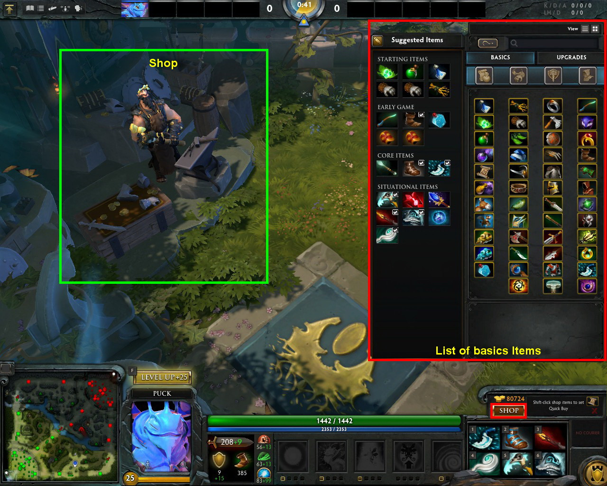
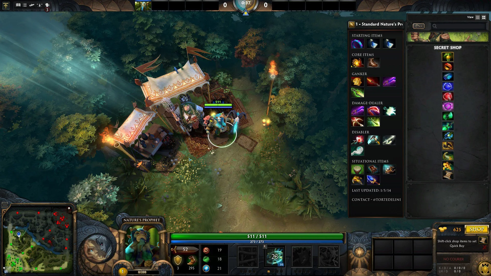
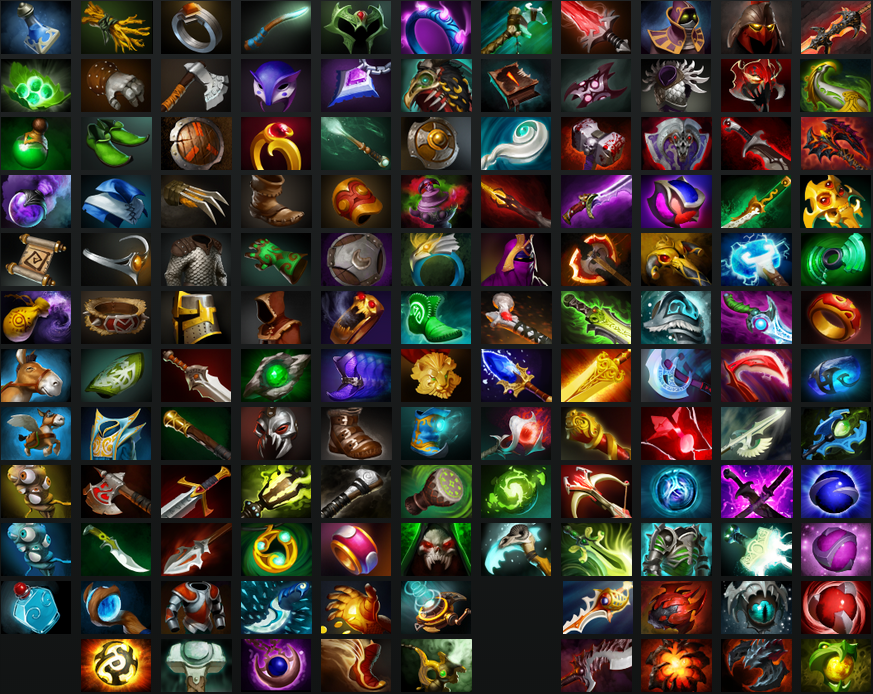

Předměty
Na herní mapě se nacházejí dva tipy obchodů. Takzvaný base shop (obchod, který je na základně každého týmu)
a secret shop (skrytý obchod, který se nachází v takzvané džungli)

Obchod na základně
- Zde si týmy mohou koupit základní vybavení, avšak některé předměty se zde nenacházejí.
- U tohoto obchodu bývají kurýři, kteří koupené věci přinášejí hráčům až na jejich pozici.
- Kuríři se dají zabít. Zabitím kurýra získáte nejen zlaťáky, ale také oslabíte nepřátelský tým.
- Při smrti je možno nakupovat, avšak jen z tohoto obchodu, nikoli ze skrytého obchodu.

Skrytý obchod
- V těchto obchodech se nachází předměty, které se nedají koupit v obchodě na základně.
- Tyto obchody se nachází u řeky, která protíná mapu.
- Pro nákup z tohoto obchoudu zde hráč může dojít, nebo poslat kurýra.
- Obchodníka nelze zabít.

Předměty
- Předměty jsou zboží získávané v obchodech. Vyskytují se v mnoha podobách a typech.
- Většina předmětů zabírá místo v hrdinově inventáři, což znamená, že hrdina může ve hře nést jen omezený počet předmětů.
- Předměty s receptem automaticky spojují komponenty z inventáře a skrýše a skládají je ve finální předmět.
- Díky tomu je nutné si promyslet kdy a co koupit. Některé předměty lze po sestavení zpětně rozložit.
- Hrdinové mohou používat většinu předmětů, ale existují i takové, které pro některé hrdiny ztrácí efekt nebo je nemohou koupit.
- Hrdinové obvykle nemohou krom předmětů na jedno použití využívat předměty zakoupené jinými hráči.
- Výjimkou jsou lektvary (doplňují životy nebo manu), wardy (davají vizi), bottle (doplňuje životy i manu) a tango/mango (doplňuje hrdinům životy/manu).